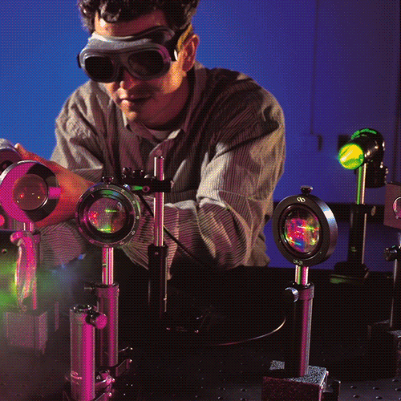

Compressie
Welkom op de pagina Compressie!
Compressie

Compressie is een methode om bestanden kleiner te maken zodat ze minder opslagruimte innemen en sneller kunnen verzenden. Er zijn twee soorten compressie:
- Lossless compressie: alle originele gegevens blijven bewaard. Dit wordt gebruikt bij tekstbestanden en sommige afbeeldingen met een bepaalde naam (zoals PNG).
- Lossy compressie: sommige gegevens worden verwijderd om ruimte te besparen. Dit wordt veel gebruikt bij foto's (zoals JPEG) en muziek (zoals MP3).
Compressie is belangrijk voor websites, apps en digitale communicatie. Omdat het zorgt voor snellere laadtijden en minder dataverbruik. Je bespaart er dus veel tijd mee en hebt meer opslag voor andere data.
Bitmap en Vecotafbeeldingen
Afbeeldingen kunnen op twee manieren worden opgeslagen: als bitmap of als vector. Een bitmap (ook wel rasterafbeelding genoemd) bestaat uit pixels, en elke pixel heeft een kleurwaarde. Dit is zeer geschikt voor foto's en complexe beelden. Een paar voorbeelden hiervan zijn: JPEG en PNG.
Vectorafbeeldingen bestaan uit lijnen, vormen en coördinaten, ze kunnen zonder kwaliteitsverlies worden vergroot. Vectorafbeeldingen zijn vooral nuttig voor logo's, iconen en illustraties. Een paar voorbeelden hiervan zijn: SVG en AI.
Het verschil tussen Bitmap en Vectorafbeeldingen is belangrijk bij grafisch ontwerp en drukwerk, omdat een bitmap namelijk wazig bij inzoomen, terwijl een vector scherp blijft. Ik heb hier zelf ook wel eens last van gehad, totdat ik erachter kwam dat het een bitmap was.
Klik op de knop om een uitleg video over bitmap en vector te bekijken!
Opslag beeld en geluid - pixel tot geluidsgolf
Computers slaan beeld en geluid op als digitale gegevens, die bestaan uit een reeks nullen en enen. Bij beeldomslag wordt een afbeelding opgeslagen als een geheel van pixels, waarvan elke pixel een speciale kleurcode heeft. Een simpele regel die hierbij geldt is: des te hoger de resolutie, des te meer gegevens er voor nodig is.
Bij geluidsopslag worden geluidsgolven omgezet in digitale samples. Een sample is een "monster" (voorbeeldexemplaar / proeve). Hoe meer samples er per seconde zijn (bijvoorbeeld 44.100 Hz bij CD-kwaliteit), hoe beter de geluidskwaliteit zal zijn. Bestandsformaten zoals MP3, WAV, JPEG en PNG bepalen hoe deze gegevens worden opgeslagen en samengedrukt.